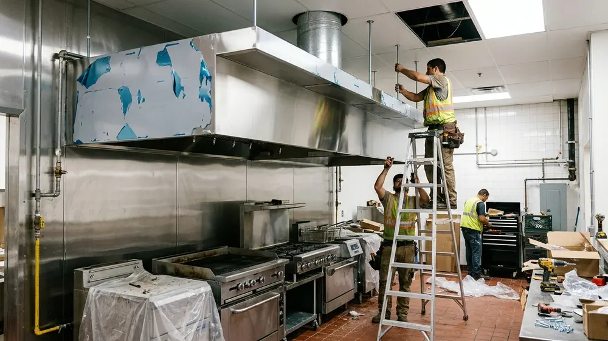

Layanan untuk Wilayah Surabaya dan Sidoarjo
Surabaya dan Sidoarjo adalah dua wilayah dengan campuran kebutuhan yang cukup beragam: gedung perkantoran di pusat kota, deretan ruko dan restoran yang terus bertambah, hotel, serta kawasan pergudangan dan pabrik di sisi selatan. Masing-masing punya kebutuhan ducting yang berbeda, dan kami menanganinya dengan pendekatan yang disesuaikan.
Untuk perkantoran, ruko, dan ballroom, kami mengerjakan instalasi ducting AC lengkap dengan isolasi dan grille. Untuk restoran, kafe, dan dapur komersial, kami membuat serta memasang kitchen hood stainless steel beserta jalur exhaust-nya. Untuk gudang dan area produksi, kami memasang exhaust dan ventilasi agar sirkulasi udara tetap sehat bagi pekerja.
Kebutuhan Berdasarkan Segmen Bangunan
Berikut adalah pemetaan kebutuhan tata udara umum dan sistem yang kami pasang untuk masing-masing segmen usaha di area Surabaya dan Sidoarjo:
| Segmen | Kebutuhan Umum |
|---|---|
| Restoran dan kafe | Kitchen hood, exhaust, suplai udara segar |
| Perkantoran dan ruko | Ducting AC split duct |
| Hotel dan ballroom | Ducting AC dan air grille |
| Pabrik dan gudang | Exhaust dan ventilasi industri |
Mengapa Workshop Fabrikasi Sendiri Itu Penting
Ada kontraktor yang hanya memasang, sementara material dibeli jadi dari pihak lain. Itu sah-sah saja, tetapi ada konsekuensinya: ukuran sulit disesuaikan mendadak, dan jadwal bergantung pada pihak ketiga. Dengan workshop sendiri, kami bisa membuat ducting persis sesuai gambar kerja dan merevisinya dengan cepat bila di lapangan ada penyesuaian.
Dampaknya terasa pada tiga hal:
3 Keunggulan Utama Workshop Fabrikasi Mandiri:
- Dimensi lebih presisi: Dibuat langsung berdasarkan shop drawing dan ukuran aktual di lokasi proyek.
- Waktu pengerjaan lebih mudah diprediksi: Tanpa hambatan atau antrean produksi di pihak ketiga.
- Penanganan cepat bila ada koreksi ukuran: Jika terjadi benturan di lapangan dengan struktur lain, revisi tidak perlu menunggu lama.

Pengalaman di Lingkungan Operasional
Banyak proyek di Surabaya dan Sidoarjo dikerjakan di bangunan yang tetap beroperasi, misalnya restoran yang tidak boleh tutup lama atau kantor yang tetap bekerja. Untuk kondisi seperti ini, jadwal pengerjaan bisa kami atur supaya gangguan terhadap aktivitas sehari-hari tetap minimal, termasuk pengerjaan di luar jam operasional bila dibutuhkan.
Tim kami menerapkan standar kebersihan, penutupan area kerja dengan terpal pelindung debu, serta penjadwalan kerja malam (night shift) atau akhir pekan agar aktivitas usaha dan kenyamanan pelanggan Anda tidak terganggu.
Alur Kerja Sama
Berikut tahapan kerja sama terstruktur untuk proyek instalasi ducting AC dan kitchen hood:
Tahapan Kerja Sama:
- Konsultasi kebutuhan dan pengiriman gambar kerja atau denah. Kirimkan shop drawing CAD/PDF atau ukuran ruangan melalui kontak kami.
- Survei lokasi di Surabaya atau Sidoarjo. Pengecekan kondisi fisik plafon, bentang balok, dan jalur buang cerobong langsung di lokasi.
- Penawaran dan kesepakatan lingkup pekerjaan. Penyusunan rincian RAB transparan dan jadwal pelaksanaan proyek.
- Fabrikasi, pemasangan, dan pengecekan akhir sebelum serah terima. Pekerjaan pemasangan rapi, pengujian fungsi/aliran udara, hingga berita acara serah terima resmi (BAST).